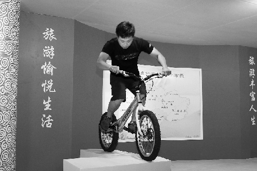

? 浙江在线06月27日讯 翠竹、绿道、田园，沙滩、躺椅、帐篷，前天开幕的2011义乌中国国际旅游商品博览会，金华展区营造出浓郁的休闲风，户外休闲家具、露营工具、沙滩车、卡丁车等各种金华制造的休闲旅游用品被摆放在最显眼的位置，前来试驾、体验的人络绎不绝。金华休闲旅游用品成为2011国际旅博会人气的绝对主角。
中国国际旅游商品博览会是国家旅游局和地方政府共同主办的以旅游商品为主题的经贸类展会，自2009年来已成功举办三届，金华场场不落，每一次参展都让人耳目一新，今年的“红船”造型，在建党90周年之际，尤以构思新颖、独到，吸引眼球。
大红底色辅以流畅、变化的浪花飞卷，接待台、展区巧妙地融为一体，喜气而时尚，独具匠心的“金华号红船”驶进旅博会。兰溪市旅游局局长方建良说，今年的金华展区是办得最好的一次，“特色鲜明，眼睛一亮，每个县市都设了展示窗口，既有整合，又有区位个体，相得益彰”。
原本一锅端的“八婺珍品”围绕金华主导产业的核心也被巧妙地予以烘托。旅博会开幕前，市旅游局局长傅显明就早早地赶到义乌“排兵布阵”。开幕当天，傅显明当起了兼职摄影师，看着金华展区前围得水泄不通的人群，他不停地按动快门，欣喜不已。傅显明告诉记者，金华是中国休闲旅游用品基地，全市旅游休闲产品出口30多个国家和地区，品种涵盖户外休闲家具、露营帐篷及相关配套产品等数千个品种，占全国总产量的15%以上。金华还是国内休闲运动车产业发源地，金华的休闲旅游车产业发展迅猛，主要生产面向出口的沙滩车、休闲观光车、自行车、高尔夫球车、农夫车、全地形车、卡丁车、电动代步车、滑板车等上千种系列产品，远销欧美等160多个国家与地区。此次参展，以这些现代休闲旅游用品为主，结合木雕、竹雕、水晶等传统工艺品，以及酥饼、香菇等特色产品，琳琅满目，尽显金华“八婺珍品”之“珍”。
“各县市参展热情很高，接到通知后，马上组织发动，企业报名参展踊跃。”市旅游局市场开发处处长任高青介绍，此次我市派出了150多人的参展队伍，品种多达200个，展区面积270多平方米，在各地市展区中非常出挑。金华休闲旅游用品在国际旅博会上唱主角，一枝独秀，其中，婺城区的“赛神”户外家具、自行车，永康的“飞神”休闲交通车还入选国家主题馆参展，颇为不易。
一改以往单纯由文艺表演助兴的方式，今年金华展区结合发展迅猛的自行车产业、交通工具等，还别出心裁地将自行车特技表演搬到了展会现场。飞车过人、旋转、跳跃，高难度的特技表演看得围观人群目瞪口呆，叫好声不断。来自千岛湖会展公司的胡新成连说金华参展形式好，有新意。等表演结束，他特地找到表演特技的小伙子，索要电话号码，询问相关事宜，表示有机会将请金华的特技表演队到千岛湖演出。
“你们要把眼光放远，不要局限于磐安，一定要把市场做大。”磐安县委常委、常务副县长陈峰齐和磐安县风景旅游管理局局长张华星一起，专程来到旅博会现场，为磐安参展商加油、助阵。陈峰齐说，近几年磐安旅游发展速度快，带动了旅游商品的发展。此次参展的磐安姜茶、香菇小罐头在市场格外抢手。尤其是磐安姜神堂生产的姜茶、姜糖、姜片深受上海、杭州等大城市游客青睐。目前，磐安正在努力引导当地旅游商品企业分享磐安旅游发展蛋糕，实现互利共赢。
第一次参加旅博会的台湾客商刘孟苇在金华展区内看得格外仔细，做礼品生意的她很快被陈列的浦江水晶所吸引。浦江风景旅游管理局副局长薛荣生见了，连忙上前当起了义务讲解员。听说浦江水晶占大陆总量的70%以上，多次被选为奥运会、世博会等大型赛事指定产品，刘孟苇竖起大拇指赞叹道：“你们的品质有口碑，我这趟来对了！”
图为金华展区前的自行车特技表演扣人心弦。高和平摄